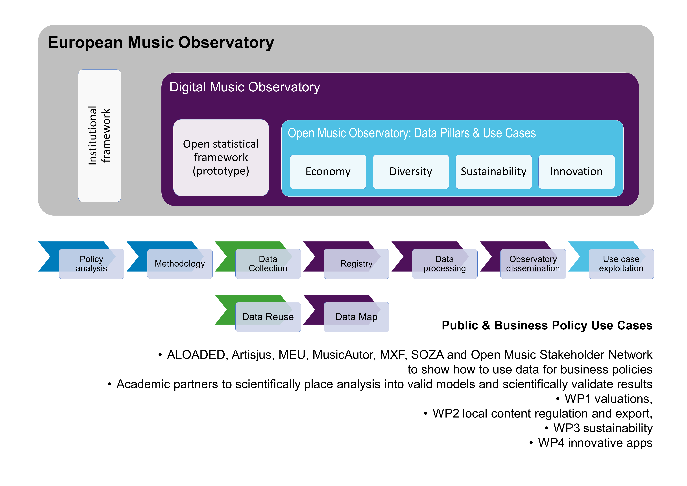

![]()
| Pillar 1 - Music Economy | |||
|---|---|---|---|
| Topic | Description | ||
| pillar | problem | availability | feasibility |
| Pillar 1 | Value of music sector | One-off | EY study on the cultural and creative industries (2015) |
| Pillar 1 | Value of music sector | One-off or one recast | CEEMID studies on national music economies |
| Pillar 1 | Employment | One-off | EY study on the cultural and creative industries (2015) |
| Pillar 1 | Employment | One-off or one recast | CEEMID national music industry reports |
| Pillar 1 | Employment | Annual | Eurostat, lacking granularity |
| Pillar 1 | Employment | Data gap | Absence of granularity on the employment of the various sub-sectors, in particular in defining the roles of the various sub-sectors and the importance of the not-for-profit sector in terms of employment. |
| Pillar 1 | Employment | Data gap | HU, SK pilot successful to add granularity. |
| Pillar 1 | Value of music sector | Data gap | No EU-level assessment since 2015 |
| Pillar 1 | Strucutre of the market | Data gap | Absence of pan-European data detailing the number of companies, employees, revenues for the sector and the subsectors. |
| Pillar 1 | The impact of the not-forprofit sector on the overall economy of the music sector | Data gap | No data available on the specific impact of the not-for-profit sector, especially in the live music sub-sector |
| Pillar 1 | Recorded music | Subject to partnership with IFPI | IFPI |
| Pillar 1 | Authors and publisher’s stream | CISAC partnership | CISAC |
| Pillar 1 | Authors and publisher’s stream | GESAC | GESAC |
| Pillar 1 | Recorded music stream - performer rights | Data gap | No aggregated data on neighbouring rights collections Partner with AEPO-ARTIS and SCAP. |
| Pillar 1 | Music publishing | Data gap | No aggregated data on the music European music publishing business |
| Pillar 1 | Synchronisation rights | Data gap | IFPI data available on the recorded music side but not on the publishing side. |
| Pillar 1 | Independent music companies | Data gap | No aggregated data on the independent music sector (value, number of companies, employees, etc.) |
| Pillar 1 | Live music | Data gap | Some data is compiled by Live DMA, ETEP or Yourope, but there is no aggregated data on the pan-European live music sector listing the value of the market, the number and size of venues and shows, number of festivals, share of European artists, among other data points. |
| Pillar 1 | Exports | Data gap | No pan-European data on the export flows between EU countries and outside the EU. |
| Pillar 1 | Exports | Data gap | Embedded cultural tourism export. |
| Pillar 1 | Music retail | Data gap | Granular data on some countries via retail associations (UK, France, Germany) but no pan-European aggregated data. |
| Pillar 1 | Financing of the music sector | Data gap | No aggregated data on how the sector is financed (from investment fund to bank loans and subsidies). |
| Pillar 1 | Live music regulation | Data gap | No aggregated information available on the various legal and tax systems within the EU applied to the live music sector. |
| Pillar 1 | Copyright regulations and evolution of copyright regimes | Data gap | Although many copyright laws applicable in Europe originate from the Commission, there are few instruments available to monitor the state of copyright regulation across the EU |
Introduction
In Open Music Europe, we would like to focus our data-driven research on two significant cultural and creative industry/music industry policy problems: how can the European music sector provide more and better employment for music professionals, and how can it create more value-added for the European economy? Our research wants to help design and monitor policies towards these goals and to support the “triple transition” of the music industry: to perform better on digital platforms and be more sustainable environmentally and socially with improved business conduct. In WP2 and WP3, we deal with social and environmental sustainability, and in WP4, we talk about the digital transition. In WP1, we focus on ensuring that music professional careers and businesses are financially sustainable.
Note
We are committed to the Open Policy Analysis Guidelines. All documents supporting this report from the proposal and hypothesis-forming part is stored and version on this repository with standardised file structure: Report on the European Music Economy. Website: Open Music Europe Consortium project website—Digital Music Observatory data platform.
Background documents and earlier versions: proposal stage—10.5281/zenodo.6464782, comparator model—repository.
Funded by the European Union under Grant No. 101095295. Views and opinions expressed are however those of the author(s) only and do not necessarily reflect those of the European Union or the European Commission’s Citizens, Equality, Rights and Values Programme. Neither the European Union nor the granting authority can be held responsible for them.
We are focusing on two key industry and related copyright policy issues: increasing income for more and better employment and increasing the value of music rights. Music is a very-labour intensive sector; capital investments in tangible assets are lower than in most economic sectors. Investments in music, like in all copyright-based industries, are mainly made on a personal level and compensated for natural persons. From a macroeconomic point of view, corporate income is relatively low in the European music industries, and most source of the value added to the national economy is earned as personal income. Such work is either paid directly as personal income or after accruing intellectual property rights (related to the composition of musical works and the fixation of their performance in sound recordings) in the form of royalty income. Securing economic policies that improve the economic position of music professionals to improve the level of security of their pay or the way they can exploit copyrights and neighbouring rights are the most critical factors that can increase the economic value added by the sector to the national or EU economy.
Economic value added is about personal and corporate income; in a sector that is mainly organised around atypical work arrangements, increasing the level and predictability of the currently highly precarious work income is perhaps the most important tool to increase employment quality and quantity. It is also in line with the relevant European Parliament resolution that had been followed by several policy and legislative initiative to reduce the risk of precarious work in the European Union (European Parliament 2017).
Open Music Europe mainly aims to help better public and business policy design with data as evidence. The problems of measuring and improving the two key components of the sector’s added value, the compensation for the work of the music professionals and the way they can exploit their rights, are connected to a more theoretical problem. and a more practical one: the heavy decentralisation of the industry combined with a high level of informality makes measuring (and improving) economic activities difficult; the informality also poses challenges for the production of statistics. Many music professionals disappear from the official measurement of income and employment, including the monitoring of copyright and neighbouring rights exploitation-related income.
In WP1, we aim to address the following key research questions:
What does the informality of the music sector mean? How can the informality of the music business be conceptualised, and how can the informal music economy be correctly measured for its value-added and employment? See in literature review.
How do music-related work income and copyright income develop compared to the average of the European economy? What is the process of music income real convergence between the richer and poorer countries of the EU? See Adding value.
How can we conceptualise and measure the precarity of work in the music industry? See employment.
How can we improve statistical practices to measure and monitor the development of music sector royalty and other income and the income convergence correctly?
What kind of policies can help to increase the value added to the sector? What kind of copyright policies can improve the royalty income, particularly in EU countries where such income is below average?
Literature review
We follow a definition of the music industry developed by the EU JRC; this definition puts the standard American music business/music industry definition into an EU context. The difference in presentation is that in the American policy context, the music industry is characterised as part of the entertainment industry (“the monetised function of leisure time”); in Europe, it is part of the cultural and creative industries, and recently cultural and creative sectors and industries (CCSI); the European definition is more inclusive to non-monetised forms of music practice and non-profit or social enterprises; recently, the European policy context is talking about cultural and creative sectors with an emphasis on the inclusion of the cultural heritage sector that can hardly be described as an “industry”1.
In the American definition, the “music business is a system of delivering music to consumers. Like any system, it creates and delivers things that have value to consumers (songs, recordings, and performances) but must do so within a dynamic external environment. The music business revolves almost entirely around three creative events: the writing of a song, the live performance of a song, and the making of a recording of a song. Three separate, but interrelated, revenue streams exist for the song, the live performance, and the recording.” (Hull et al. 2011, 51.)
In the European definitions, various aspects of these activities had been present. The EU JRC settled for the adoption of the American “music trade” or “music business” or “music industry” (synonyms) definition as described above (Adnra Leurdijk and Ottilie 2012a, 15–18).
In the late 20th century, the music industry was often used as a synonym for the sound recording industry, which is in the UN and European economic classification system and is part of one economic activity group with music publishing, i.e., J58.2. In the 21st century, the live performance of music is a bigger business than the sale of recorded performances. The live music industry in the standard classification is part of the R90 division of economic activities, which consists of all forms of performing arts.
In the previous decade, the former CEEMID project has provided significant insight and introduced new methodologies into valuing the (value-added) income and the value of rights in the sector in Hungary, Slovakia and Croatia first, then in the wider and less data-rich Central and Eastern European region.
The CEEMID project was motivated by the realisation of the lack of reliable data on how the Hungarian, Slovak and Croatian music sector add value to their respective national economies (Antal 2015, 2017, 2019b, 2019a). While the three country studies had slightly different policy focuses, they had to cope with a common problem: the low level of formalisation of the music sectors of these countries. CEEMID introduced measurement methodologies from the economics and statistics of the informal economy; it turned out that these problems are prevalent all over Europe, even in the far more developed UK music sector.
Value creation in the music industry
There are several overlapping factors why we do not have a standardised statistical measurement of the music industry in 2023. The system of national accounts does not cover the music industry. The statistical data classification nomenclature behind the national accounts at the first worldwide adoption did not regard music—and the creative industries—as “industries”. The first global classification nomenclature of economic activities, NACE, even after its significant revision in 2006, does not have a “music” or “film” industry. An important aspect is, of course, informality, which poses both theoretical and very practical problems when trying to measure the economic performance of music consistently.
Despite the high value added by the informal music sector, of course, the global music economy has some very large enterprises that are well-known in many countries of Europe and beyond, such as the Universal Music Group, Sony Music, Warner Music Group, or Live Nation. There is a standard, well-harmonised definition of the music business across the U.S. and the European Union; however, this self-image of the industry is not well reflected in the European (or American) statistical system or public policies.

For the mapping of the music industry, we use the standard “three income stream model” that is widely accepted in the United States as well as in the European Union (Hull et al. 2011) or in Europe (Andra Leurdijk et al. 2013; Adnra Leurdijk and Ottilie 2012b). We have experience in using this value chain for mapping the national music market’s sales, use and price data in Hungary, Slovakia, Croatia.
The concept of the value chain shows what processes add value to the services of the music business to the end-user. It should not be confused with the concept of added value. The value chain shows why music businesses can sell music at a higher value than its production cost; the value added is the new income of the music businesses and music professionals they can keep after all their costs are paid. A well-functioning value chain can increase the value added of the industry and the national economy. For our measurement purposes, we used the value chain to pinpoint those units where the new income (and the jobs that the income supports) are generated, and where this income and jobs can be empirically observed.
Note
REPREX: a bit more should be here about the mapping endorsed by the ESSnet culture and our previous experience in CEEMID.
The concept of Total Economic Value
Our starting point for music policy rooted in welfare economics. Total Economic Value is the sum of all values that governments may seek to maximise (Figure 1). Total Economic Value includes use and non-use value and comprises market and non-market value (Figure 2). A typical structure for Total Economic Value is presented below. As illustrated, non-market values can be both use and non-use values.
Direct use values are more likely than other types of value to have a corresponding market activity, giving rise to a measure of value through a market price or return, e.g., the total income of a creative or cultural enterprise. Direct use values can be categorised as either:
Indirect use values come from using a good or service but not through one’s engagement with it. An example of indirect use value is living near cultural facilities that one does not attend. Indirect use values tend to be overlooked in a market setting. However, they are sometimes reflected in market signals, such as property prices or the values of the final goods or services consumed, which may be influenced by the range of positive or negative impacts from others’ direct use. A family’s home can increase in monetary value from the fact that a derelict neighbourhood warehouse is converted into a concert hall, even if the family never visits it.
Non-use value
Total Economic Value goes beyond direct and indirect use of goods and services to ‘non-use’ values. Non-use value is the value that people assign to goods and services even if they never have and never will use them. Non-use values have been categorised as follows: - Option value—the value placed on individual willingness to pay for maintaining an asset or resource even if there is little or no likelihood of the individual ever using it,[JP2: is this not indirect value] - Bequest value—values placed on individual willingness to pay for maintaining or preserving an asset or resource that has no use now so that it is available for future generations, - Existence value—reflecting the benefits people receive from knowing that say, an environmental resource, such as Antarctica, exists, and - Altruistic value—the value placed on an individual willingness to pay for maintaining an asset or resource that is not used by the individual so that others may use it.
Altruism/bequest values arise from others’ current or future use of a good or service. Pure existence values arise from merely knowing that a valuable good or service exists. In music, we are well aware of such value; various national, religious or other cultural communities take pride in their music heritage and they value recording, preserving, or passing it via education to new generations even if members of these communities individually do not pay for or enjoy such traditional music all the time. In many European countries, an important role of music educations within the general education system is the introduction of national folk/classical or even popular music heritage to new generations; local and national governments value and spend on music in this way.
Market and non-market value
Market values for creative goods and services are usually reflected in the prices paid. For the industry or an industry sector, the Output value (see Direct Economic Value above) would represent the total market value of that industry or sector; although the music industry is well-known to offer much zero-priced services. In this cases, it is not the final user, but an intermediary, for example, a radio station, that is paying for the music.
Non-market values are values held by individuals or the community at large for goods and services that are not expressed in a market and hence do not have an accurate price from which to derive a value (i.e. the price differs strongly from the total value society is willing to pay for the good or service).
Public goods and externalities are the most common sources of non-market values. Public goods cannot be restricted or rationed, so a price cannot be charged for their consumption, and the market price does not consider the total social benefits or costs of the good or service, known as externalities.
Total Economic Value provides a conceptual framework to consistently identify non-market values so they can be included in an economic assessment. Non-market values are primarily non-use values (bequest value and existence value). However, they may also include indirect use values (vicarious use of a good or service) and direct use values (actual use of a good or service).
In most of our work, we will focus our attention on the use value of music.
Informal economy and mixed surveys
Note
REPREX: References
The concept of the “informal economy” has changed significantly. in the last three decades; unfortunately, especially in an Eastern European context, it is still associated with illegality and invisibility for the tax authorities—in fact, the International Labour Organization (ILO) definition of the informal economy explicitly excludes illicit activities. The modern definition of the informal economy used by the OECD, ILO or the IMF recognises the importance of the informal economy and does not focus on anomalies but regards the informal economy as a core component of economies at every level of development. “The informal economy refers to all economic activities, excluding illicit activities, by workers and economic units that are, in law or in practice, not covered or insufficiently covered by formal arrangements”2. Employees are considered informally employed if their employer does not contribute to social security on their behalf or, in the case of a missing answer, if they do not benefit from paid annual leave or sick leave.
“While the informal economy exists everywhere, it is more prevalent in low-income countries, where it represents 89 per cent of total employment, compared to 82 per cent and 50 per cent, respectively, in lower-middle and upper-middle-income countries and 16 per cent in high-income countries”. Informality in the creative industries is not specific for Slovakia or the European Union: according the ILO, the 40.2% of the global workforce and 13.9 of the European workforce in the Arts, entertainment and recreation works in informal arrangements (International Labour Office (ILO) 2023, 11, pp. 60-61.). While globally the insecurity of informal work puts mainly women at risk, this is not the case in this sector; the reason behind this is that the music economy, like many creative sectors, employs more men then women in general.
In the EU countries, including Slovakia, Hungary and Bulgaria, the informal economy is measured by the The European Union Statistics on Income and Living Conditions (EU-SILC) survey. While the earlier CEEMID/Digital Music Observatory surveys did not strictly follow the EU-SILC and ILO surveying guidelines, with a similar methodology they put the Central and Eastern European music industry employment’s informal component around or above the global average. We do not think that this is a contradiction: the informality may be lower in the Western and Nordic part of the EU, and it is also likely that many informal arrangements were not properly attributed to the creative sectors. The Digital Music Observatory surveys have connected formal and informal technical and managerial employment to the sector, which is not possible from the EU-SILC survey alone. It is likely that with a proper mapping the EU-SILC survey methodology would also show a much higher level of informality in the music sector.
While the earlier CEEMID/Digital Music Observatory surveys did not strictly follow the EU-SILC and ILO surveying guidelines, with a similar methodology they put the Central and Eastern European music industry employment’s informal component around or above the global average. We do not think that this is a contradiction: the informality may be lower in the Western and Nordic part of the EU, and it is also likely that many informal arrangements were not properly attributed to the creative sectors. The Digital Music Observatory surveys have connected formal and informal technical and managerial employment to the sector, which is not possible from the EU-SILC survey alone. It is likely that with a proper mapping the EU-SILC survey methodology would also show a much higher level of informality in the music sector.
The last 30 years of economic research have shown that for certain occupational groups and sectors, the informal economy is not only invisible to the taxman—in Hungary and Slovakia, we believe that most of the industry income became visible to the tax authorities over these decades—, but it is mainly invisible for the statistical system that provides evidence for economic policies.
While in 2018 the International Labor Organization (ILO) definition was slightly changed, the 1993 definition already gave us a very useful characterization that fits very well the European music industries: “The informal sector may be broadly characterized as consisting of units engaged in the production of goods or services with the primary objective of generating employment and incomes for the persons concerned. These units typically operate at a low level of organization, with little or no division between labour and capital as factors of production and on a small scale” (International Labour Organization (ILO) 1993). In addition, they share the characteristics of household enterprises. The resolution defines the concept of the informal economy as “all economic activities by workers and economic units that are—in law or in practice—not covered or insufficiently covered by formal arrangements”.
The creation of the Hungarian and Slovak national music industry reports in the CEEMID project focused on these key aspects, particularly the lack of typical or formal labour arrangements and the lacking division of labour and capital as factors of production. We have shown that in Hungary, Slovakia or Croatia, the typical stakeholder of the music economy is centred around a self-publishing, self-releasing (group of) artist(s), who exploit their labour, own invested assets and copyrights or neighbouring rights. We have shown that a typical music professional receives income from 20-60 “gigs”; in many cases, the closest resemblance to an employer is their relationship with a collective management organisation. Later, the Central European Music Industry Report showed that from Austria to Armenia, the situation is similar regardless of the level of economic development and industry income.
The ILO and the OECD (following the IMF) suggested using mixed enterprise- and household or personal surveys to capture the employment and income created in the informal economy. This approach is widely used in the European Union -- in our first pilot country, Slovakia, the Statistical Office of the Slovak Republic (SOSR) uses mixed surveys since 2010. CEEMID introduced a similar surveying framework in 2014 in Hungary and refined it in the 2015 Croatian, 2017 Slovak, 2017-2019 Hungarian and 2019 Central European music professional surveys.
The OECD Manual on Measuring the Non Observed Economy endorses a combination of LFS surveys with in-depth more specific surveys, such as the Digital Music Observatory/CEEMID music professional survey that we want to develop further: “Monitoring the number and characteristics of the persons in the informal sector and the conditions of their employment and work can be achieved by periodically including a few additional questions pertaining to the informal sector definition in an existing labour force or similar household survey […] Labour force or similar household surveys are often conducted at a higher frequency than specialised, in-depth informal sector surveys. Thus, the data obtained from the former concerning the evolution of labour inputs in the informal sector can be used to extrapolate data from the latter […]” (International Monetary Fund (IMF) 2002, 170).
Similarly, the manual on the same topic of the International Labour Organization suggests taking the LFS as a starting point: “There are many advantages to including the measurement of both informal employment and employment in the informal sector in a labour force survey or a household survey that includes the labour force as a topic These include the relative ease with which the topics can be added to an existing survey, cost-effectiveness, conceptual coherence with other labour force statistics, and the analytical possibilities offered by the collected information.” (International Labour Organization (ILO) 2013)
The application of mixed surveys is not only challenging on the production side of statistics, for example, in surveying. The analysis of industry value added is usually based on the system of national accounts. The main source of the national accounts is administrative (tax) records from enterprises and enterprise surveys which focus on corporate income and income paid mainly in formal and typical labour arrangements to workers. In music, we turn to mixed surveying because the (large) informal part of the music economy is not represented in these administrative data sources and surveys, partly because it is not organised around formal enterprises. With the combined use of LFS or a similar survey, we target to measure personal income in the informal economy. The reconciliation of personal income with the value-added concepts and employment in the informal economy with the full-time equivalent concept of the national accounts is an important task for labour economists.
We first turn to the the problem of value added and employment, and then we return to the more practical surveying questions.
Adding value
On a macroeconomic level, Gross Value Added (GVA) is closely related to the Gross Domestic Product (GDP)—the difference is the net value of subsidies received for the music industry and taxes paid. As we have shown in Hungary and Slovakia, contrary to common belief, the developing music sectors of these countries contributed with far more taxes than received subsidies; in Slovakia, we have shown that the music industry was one of the highest net payers of the national treasury.
On the level of music businesses, the value added is the sale value of music services and products to their cost of production; this is revenue of the capital and labour factors of the business. As we have cited earlier, in the informal economy, these two factors are undivided. For example, the value-added of a self-publishing and self-releasing individual musician is the personal income of this person, who partly offers work, but also makes investments (into tangible and intangible or intellectual assets) to create the music.
If we have a sufficiently formalised music business, even if it is centred around a commercially successful artist, the profit and loss statement and the balance sheets of this enterprise allow us to observe the value added, i.e., the economic or accounting income above the cost of production. The problem with the informal music economy is that much of the costs are not accounted for, only the gross income. The reconciliation of the value-added data from an enterprise survey or an administrative record like a financial report and from a personal survey is not straightforward.
Warning
The Slovak CCI Strategy identifies a value added KPI and cites the Slovak CCI satellite accounts as data sources; EUBA should discuss what is the KPI about, what are the initial values, introduce the CCI satellite account, and provide us ideas on how to calculate this indicator for the music industry itself.
Employment
The work in the music industry, regardless if it is artistic or technical, managerial work, is often described in the music literature as "precarious". CEEMID has used this framework in the last decade to understand how music professionals earn their living. Precarious work is a term originating in work sociology—see for example: (Haynes and Marshall 2018)—, and it refers to working conditions with a high risk of being underpaid, insecure in terms of employment and low working safety, for example, a high risk of sexual harassment. Precarious work is related to the labour economics term "informal work".
Because music precarity is often researched with qualitative sociological and anthropological methods, it is often ill-designed to be measured with surveys or administrative data. In the Netherlands, Martin Olsthoorn offered two formalised indicator definitions that are compatible with the Dutch OSA survey (Olsthoorn 2014)3. The Central European Music Industry Report and the previous national reports have developed a similar survey but less formally defined as Olsthoorn's first indicator, which focuses on the risk of low total income.
In the Central European Music Industry Report, and particularly in work conducted for the Czech music export office, we built CART models based on the CEEMID survey data to quantify the achievements required by Austrian and Czech musicians to reach full-time equivalent income from a large number of sources. (This work was not continued due to lacking funds.)

This chart shows that in 2019, Austrian musicians with 6-7 years of composition and recording history had a chance to stay in the music business and earn a full-time living; in Czechia, about 12-13 years of composing history were needed. As the Central European Music Industry Report and national reports showed, the difference could be hypothetically explained by a lower level of copyright protection in Czechia (or Slovakia) and generally an underdeveloped recording industry. In the CEE region, we see particularly strong reliance on the author's revenues compared to the UK or Austria in the absence of viable commercial record sales.
Zero-price services
In the past years, there has been an increased interest in analysing online platforms where the consumers do not pay a price. Watching a music video on YouTube, or reading amusing content on Facebook, finding accommodation on AirBnB does not cost anything for the buyer money, though the buyer’s time in viewing advertisement, the buyer’s data footprint, or a commission from a two-sided product (the supply side of a rented room) offers a compensation for the platform. As a recent competition study pointed out, such practices are probably originated from the use of music and audiovisual content on radio and television (Competition & Markets Authority 2020).
What makes understanding music markets so difficult is that they are seemingly in the plain sight of the public and policy makers, but most of the market transactions are invisible. In many advanced music markets more than half of the music uses, i.e., the market volumes are not paid for by the user. Radio stations or the popular UUC platforms like YouTube, TikTok or SoundCloud, but even licensed music streaming platforms like Spotify offer zero-price services for the users. While there is a growing body of consensus and practice on how to incorporate zero price transactions into competition practice, but in our experience the empirical observation of these markets is very challenging. When consumers pay a price, both the quantity of the sales and the price is recorded on the invoice, and this information is translated into tax returns and financial statements. Zero price transactions have no invoices, and no accounting trail.
Music in these zero-price transactions is valuable because eventually, somewhere, musicians are paid a copyright or neighboring right royalty for the use of their intellectual product. Generally, this payment should be aligned with the norms of fair remuneration and fair value, which is our next research topic; however, the presence of zero-price transactions makes the application of valuation models particularly challenging in a music market.
Valuing copyright and neighboring rights
Note
REPREX: rewrite
Policymakers and primarily business entities would like to see a music valuation and pricing model that is economically and legally sound. From a technical point of view, such a model would define statistical and accounting processes that will yield correct values and prices from available accounting- or survey-based evidence. Harmonising such broad concepts as “fairness” or “equitable remuneration” among economics and accounting with the law would require an entire research project, mainly because the legal definitions of these terms vary across copyright, competition, or labour law. Nevertheless, we understand that the business value of a model that can be successfully challenged to be incompatible with copyright, competition, or accounting law would be very little. Our aim is the creation of “market comparator model” that is economically consistent and unlikely to be challenged on various legal grounds. Furthermore, we aim to provide actionable data or data collection and processing procedures for asset valuation or price setting.
There are countless ways in which a licensing policy may breach copyright or competition laws, and we cannot promise a silver bullet for all pricing and valuation problems. We aim to build a valuation model and then a data-to-policy pipeline that can create fair valuations or prices for copyright or neighbouring right-protected assets in a way consistent across various licensing modes of music and usable across Europe (as much as the legal norm behind these licenses is harmonised).
Nevertheless, a model is only a model: a consistent framework to conceptualise an economic problem. Fair copyright or competition policies do not only require a correct price, but generally fair licensing terms. Therefore, our aim is the creation of a model that is not only economically consistent but internalises tests of legal compliance.
- The use of valuations of our model, or licensing fees set based on our model, are likely to meet the fairness criterion in copyright law or in situations when the use of the “equitable remuneration” standard is required.
- Such a licensing policy would not violate the terms of fair competition based on price or economic facts.
- Valuations used with our data and models would meet the fair value standard of IFRS, and their use would not mispresent the value of the copyright royalty-earning assets or expected future payments.
CEEMID did several valuations in Hungary and Slovakia that aimed to meet legal and economic standards; third parties, such as competition authorities, challenged these valuations. We want to build on this experience to standardise a valuation model that can be used practically for business and public policy tasks.
Correct accounting data
Copyrights and neighbouring rights are governed by international law, and in Europe, they are further harmonized by EU law. The valuation principles of intellectual property are set by various standards set by the World Intellectual Property Organization (WIPO) and the International Financial Reporting Standards Board (IFRS). The IFRS standards are incorporated into EU accounting law, and the WIPO standards have a similar international law underpinning as the more specific copyright and neighbouring right. Even though every European Union member state has its own copyright and accounting laws, they are harmonised to the degree that we can create rather portable valuation models.
Music’s valuation and price setting must comply with the broadest fair value principles (set by international financial reporting standards) in light of the intellectual property standards set by WIPO. Copyright and neighbouring rights law have special provisions, often called “equitable remuneration.” From an economic perspective, we treat equitable remuneration as a special case of fair valuation. Even when equitable remuneration is not applicable in the music industry, we believe the broader fair valuation principle should yield a similar result.
Fair value
When intellectual property is sold (against a lump-sum payment), licensed (for periodical payment), or used as a pledge against a loan, the transaction must comply with the Fair Value standard. This standard, similarly to copyright law, follows international law. While it is transposed into national law in somewhat different ways, it cannot be altered fundamentally. The Fair Value standard of the International Financial Reporting Board has been incorporated into national European laws via EU law (and it remained UK law after Brexit, too.) Our understanding is that music prices should mainly follow the Fair Value standards, but they are also inspired by the more general arm’s length principles: whenever a market transaction is not possible, the compulsory conditions should resemble of something that two market powers without power or proximity of interests (at arm’s length) would agree to pay.
In 2008, the global recording industry body, IFPI, published Valuing the use of recorded music, created by PriceWaterhouseCooper (PwC 2008). This methodological guide applies the WIPO and IFRS standards (IFRS 2011; Flignor and Orozco 2006; Puca and Zyla 2019) on valuing copyrights in more practical terms for the music industry.
For Joost: I do not think that this is a partisan study; no wonder that it is no longer available on the IFPI website. It is a highly methodological paper where PWC tried to show with case studies how the WIPO standards were applied with the various allowed methods in copyright disputes globally. I am not aware of any similar publication that is not either based on one actual litigation, or which is not purely theoretical.
The valuation principles are enshrined in the fair valuation principles of the WIPO and the fair value principles of the International Financial Standards Board—their use is not a recommendation but a statutory obligation in most IFRS countries.
Most applicable method
The recognised fair valuation principles stipulated that the “most applicable method” must be used in valuations. Because most music is created by natural persons (and in the informal economy, see []), the (historical) “cost approach” is almost never a good option; natural person in a sole proprietorship or in a more informal economic form are not recording their costs. The cost approach is inapplicable because the rightsholders are natural people who do not account for their working time, i.e., the time when they are composing music. There are no appropriate business records of most creative activities related to the composition and performance of music. The cost approach could be used for the rights of the producers, but because their rights are not going to market in separation from the other rights, cost approaches are never used in the music industry.
The income approach compares the royalty flows of a work of its recording by using an appropriate “discount rate.” When a user buys in a music store an mp3 file on 1 July 2015, it triggers a single royalty payment after the deductions of the cost of sale on the marketplace. In a streaming platform, the same user’s royalty payments appear monthly when she listens to the song and on the radio, usually every year. The discount rate provides a proper comparison between remuneration received in July 2015 and April 2021. The income approach is often impractical when we have irregular or annual payments. With annual payments, the valuation’s timeframe would be too long. Calculating an appropriate discounting rate would also be practically impossible for many uses.
The market approach tries to identify a payment rate, regardless of if it is made in a lump sum, monthly or annually established, based on sufficiently similar uses. Many ideas were tried internationally to identify the sufficiently similar use of music streaming; for example, relating ad-supported and automatically selected songs to radio streams and relating cases where the user controls the selection of songs and may even download them to music downloads. We will use the market approach for practical uses, although the market approach, unlike the cost or income approaches, is not a fundamental valuation method. In other words, we can use the market approach only if we accept that at least some of the prices are correct on the market, and only some of them can be questioned.
The application of fair valuation principles is particularly challenging in the case of private copying, where the transactions are not recorded (as they are not market transactions) and in streaming, which is a relatively new technology that is seen in licensing as a mixture of earlier mechanical copy-based and public performance-based licensing, and has so many transactions that most rightsholders (and even their national organisations) like the data processing capacity to administer the rights or challenge incorrect payments.
Our grant agreement and task list specifically mentions that we will build a market comparator model, i.e., in T1.1 we are focusing on methodologies and data collection modes that support this task. If we use the market approach for valuations, we must consider the differences in the way music is licensed and royalties are paid for.
The public performance model has various pricing standards for live music, publishing and the recording side. For radio broadcasting, transmission, and background music, it uses annual blanket licensing. When analysing public performance uses and payments, we must be careful with the timeframe of the analysis. Public performance revenues are usually accrued throughout the year and paid once, but there may be different accrual and payment periods present in a market.
The mechanical licensing model is used for physical products, legalised digital downloads, and home copying and has lump sum values, paid upfront and for perpetuity. In the case of home copying levies/compensation, the sum is not expressed per unit but in annual lump sums, which are historically connected to the mechanical pricing model. (See Private Copying in Croatia, where we explain in detail this analogy (See Private Copying in Croatia where we explain in detail this analogy (Antal 2019a)). The mechanical licensing model is well harmonised globally via BIEM, is the international organisation representing mechanical rights societies.
The streaming model is de facto harmonised by the fact that the major players in the world are the same, and they are using similar model contracts. Legally speaking, the solutions differ among the UK, U.S., and EU solutions, but the streaming model is always a hybrid of the mechanical licensing and the public performance models. A streaming provider needs to have a license from both the publishing side (that is present in mechanical licensing) and all interested parties that are present in public performance licensing. In streaming, the default accrual and payment period is the month.
The UUC model (mainly applied by YouTube) is very different.
These licensing models are very well harmonised internationally. Our model could be easily transposed to any EU member state or the United Kingdom and even to the U.S. if we consider the problem of radio transmission licensing in that jurisdiction. It is important to notice that while the same principles can be applied in many jurisdictions, the actual value of the rights will differ in each country because of different market and regulatory conditions.
We translated the revenues from these income streams, excluding the background music sold to business-to-business uses in the hotel, restaurant, and catering sectors, into notional hourly royalty figures.
In the case of live performances, we took the notional concert visits of each country as a 90-minute performance to compare variously priced live performance revenues with a similar currency unit / per hour format. Live music only uses the public performance model, and it plays a relatively minor role in the live music ecosystem. Our model focuses on the recording and publishing side of the music business—they have two mature business models that are highly comparable internationally or in long-term longitudinal analysis. Both the mechanical licensing model and the public performance model are based on the same international regulation (harmonised on the level of international law) and follow the same business (licensing) model. In most cases, the actual licenses are territorial, and the prices and exact licensing terms are specific to the country. But these aspects of our full market comparator model are very easy to replicate for any year and licensing territory (national jurisdiction.)
The regulation of free uses, particularly the home copying exception and its remuneration, is different in each country which has this exception at all—-but private copying levies, when applicable, do follow an adapted form of mechanical licensing. The compensation is annualised, like in public performance, and the rates (prices) are somehow related to the mechanical royalty rates.
Equitable remuneration
Because in the past years the term equitable remuneration was often part of music policy debates, we want to clarify that this technical term is often not covering what people would instinctively think to ‘equitable’ or ‘just’. Equitable remuneration is a legal concept which has an economic aspect.
In international law, it was first enshrined as Convention C100 of the International Labour Organisation (ILO), stipulating that men and women should receive equal pay for equal work (International Labour Organization (ILO) 1951).
Within the context of international copyright law, it was introduced as a modification of the Berne Convention by the Rome Convention for the remuneration of the broadcasting of recorded fixation of music works (recordings) since 19714. Equitable remuneration is originally connected to a compulsory license that must be paid when recorded music is played in a publicly accessible location to the performing artists and music producers. In a compulsory licensing regime, the rightsholders are not in a position to negotiate the royalty rates or deny use to any business entity5, because it is not a negotiated market rate. The payable rate is called equitable (and, in some jurisdictions, fair) . The law stipulates in these cases the rate must be set as if they have negotiated in a market transaction of two willing parties without monopoly (supplier power) or monopsony (buyer power).
The equitable remuneration standards in international treaties do not set a standard for calculating the monetary value of the equitable remuneration that is paiable to the rightsholders. In an international context, a study of Europe Economics and IVIR has shown that there are notable differences in how equitable remuneration is understood—and it is often used as a synonym for fair remuneration (Europe Economics & IVIR 2015). Despite the national differences, it is a sufficiently harmonised system that allows the functioning of the global music industry without major barriers and therefore allows the comparison of revenues, prices and volumes, too.
The concepts of copyright law, such as equitable remuneration, set a legal basis for the remuneration of creators, particularly in cases where the seller has no freedom of contracting the actual user. Such rules, however, do not contain regulations on how to set the payable sum—this often leads to confusion. Copyright law creates valuable rights, but the value of these rights must be interpreted in the light of further legal principles and economic norms.
In the European Union, copyrights are treated as constitutionally protected rights which are protected on an equal level with fair competition. The states created valuable rights for authors, producers and performers of music with conditions to exploit them fairly. In our understanding the valuation of music and setting its royalty prices should mainly follow the Fair Value standards, which inspired by the more general arm’s length principles.
For Joost: we tried to reconcile “equitable remuneration” with competition law, because remuneration schemes are usually challenged on the basis of competition law. What we tried to go in the last years is to try to reconcile terms in this direction to gain actionable, practical tests about price adequacity. In my understanding, equitable remuneration must meet at least some arm’s length standard, because the entire regulation is necessary due to the absense of the seller.
I understand that it is a big claim to equate equitable remuneration with fairness from accounting or competition policy point of view, but it is still necessary, otherwise there would be a legal collusion; if there are cases when competition law or accounting law requires the use of a different price/value than competition law, then the market players cannot fulfill all their legal obligations at the same time.
I can see that the relationship among these rights is hierarchical: a country that does not establish equitable remuneration or a similar rights does not set into motion the possibility for certain types of remuneration. However, when the legal framework is there, it must work in accord with other legal constraints. Equitable remuneration must not be exploitative either for buyer or seller, it must create some arm’s length solution as if the license was negotiated without undue power misue.
Another similar issue is that because this is part of the formal economy, there must be ways how to account for the calculus or payment of the remuneration, so it must comply at least with bookkeeping laws and accounting laws on how to understand the recorded economic data. I do not claim that whatever is put into the books of an enterprises as ‘fair value’ is OK for equitable remuneration, but, for example, if a copyright tribunal settles the amount of equitable remuneration and it is paid or received by a party, that amount must not be challenged any longer on the basis that it is not ‘fair’.
In economic terms, these rates must be set on a fair value basis.
Equitable remuneration is not a valuation or pricing concept, but it is an important legal mechanism to ensure that copyright and neighbouring rightsholders are remunerated. In our understanding, equitable remuneration must consider the fair value of copyright- or neighboring right royalty earning assets, as defined by economics and international accounting standards. How this value is converted into royalty payouts and earnings varies; partly because of different legal definitions of the remuneration and the right behind the remuneartion, and partly because of the different licensing practices and their implications on royalty payments (accruals, payment frequency.)
Consistent surveying
Mapping the music industry in the national accounts, satellite accounts
A satellite account is a framework of presentation for the economic data of a particular area in relation to the overall economic analysis of the central framework of the national accounts. The use of satellite accounts for education, health, tourism, environmental issues is commonplace.
The Slovak satellite account shoudl be introduced in detail.
Data gaps
Music is a very much data-driven industry, and it was one of the first global industries that moved much of its sales to a few global digital platforms that record incredible details of information. Many data gaps in the music industry are illusory from the point of view that the data is recorded somewhere; it is “only” not processed and aggregated into formats that would be required for public policy analysis. And then we have a large informal part of the music economy where many important data, for example, costs or investments, are not recorded systematically.
The Feasibility study enumerates most data gaps in the Music Economy Pillar. Most European countries do not have a consistent top-line indicator like the share in GDP, gross value added, or total employment in the sector. This is the result of lacking national accounts for the music industry, which then translates into the lack of further indicators that are usually present in the system of national accounts, such as exports and imports; because we do not have a music industry total, we do not have indicators for the important sub-sectors, such as live music or the recording industry.
In Open Music Europe, the WP1 provides an exploitation pathway towards increasing the value of music rights. Our planned case studies in Hungary and Bulgaria aim to improve the valuation of music rights in these countries; our primary focus is to find the data needed for this policy intervention. Our second priority is to improve the measurement of perhaps the two most important economic indicators, i.e., various concepts of income (value added) and employment.
Our main research areas are Hungary, Slovakia and Bulgaria. In Slovakia, we have concluded a MoU. Slovakia is one of the few countries that invested into the creation of a Cultural and Creative Industries Satellite Account: we will add research, methodological and data inputs to this pioneering effort to make these accounts more usable for the music industry—this work will improve the measurement of various types of income (value added) and employment. In Hungary, Artisjus has been developing a particularly comprehensive music valuation system, which has been successfully used in Slovakia and Croatia with less detail. Our aim is to generalise this valuation method and transfer as much as possible to Bulgaria, which is perhaps the least developed music economy in the current European Union, not counting the smallest members states that do not have an economically sizable sector at all.
European policy data gaps
In late 2015, the European Commission started a dialogue with representatives from the music sector6 in Europe with the aim to identify key challenges and possible ways to tackle them, including EU support. “Music Moves Europe” has become the framework for these discussions and, more broadly, for EU initiatives and actions to promote the diversity and competitiveness of Europe’s music sector in terms of policy and funding. As part of the 2018 Preparatory Action “Music Moves Europe: Boosting European music diversity and talent,” the EU commissioned the creation of the “The feasibility study for the establishment of a European Music Observatory” (Commission et al. 2020) (in short: EMO Feasibility Study.) The current call, Towards a competitive, fair and sustainable European music ecosystem explicitly refers to the relevance of the Music Moves Europe policy context.
The Open Music Europe project plan and grant agreement foresees the development of an open science and open data service which complements the existing statistical service of Eurostat. In partnership with the key music industry and policy partners, we will fill as much as possible from the approximately 41 data gaps within the policy context of Music Moves Europe, as identified by the Feasibility Study for a European Music Observatory. We will develop key performance indicators for music businesses and policy indicators to “better detect the performance of the European music sector and its contribution to economic and social development, as well as to sustainability.”
At the proposal stage, we mad the following pre-assessment of the data availability for WP1. In the case of Pillar 1 – Music & Economy, we are usually able to locate the source of the data, and we have some experience in processing the data and bringing it to light. We have mapped many perceived data gaps to the various data harmonization projects of GESAC and CISAC, and we will seek cooperation with these organizations and their members to find a secure and voluntary way to retrieve the data. The only data gap that we do not intent do address is the “impact of the non-profit sector”.
Note
REPREX: Recreate and explain table
In Europe, public policies on music are mainly the competencies of member states, who often develop policies for all creative sectors because of their similarities. Furthermore, because of the territorial nature of copyright law, the publishing and recorded side of the industry is also organised according to national markets. Both public and business policy requires most indicators at least on the national level. Therefore, the data gaps must be filled with national indicators.
National policy gaps
In Slovakia, like in many European countries, music policy is part of a wider cultural and creative industry policy. The main policy document is the Stratégia kultúry a kreatívneho priemyslu Slovenskej republiky 2030 [Strategy of the cultural and creative industries of the Slovak Republic 2030] (Ministerstvo kultúry Slovenskej republiky 2023). This policy document envisions culture and creative industries in a Slovak Republic that is free, culturally diverse, self-confident and firmly rooted in democracy; it protects and develops its cultural and natural heritage, invests in education, supports its talents and creativity, and is open to innovation and cooperation with the world. Achieving this vision is articulated in seven interacting strategic objectives, which are detailed in strategic priorities and actions: - A well-governed culture, which aims to strengthen the performance of cultural policy based on quality management, participation and cooperation in and to introduce a results-based evaluation approach. - An effectively funded culture, with the aim of systematically reducing infrastructure and modernisation debt and increasing management efficiency and financing of culture and creative industries, to complement public funding with private sources. - A culture with dignity, which aims to improve the working and creative conditions for people working in culture and the creative industries. - Quality culture aiming at increasing the expertise, innovation and quality in the cultural and creative industries. - Inclusive culture to ensure that culture is accessible and develops its specificities for all. - Respected culture aims to raise the profile of culture and the creative industries and improve their recognition as an important value to society at a national level, to improve its foreign presentation and international cooperation. - Responsible culture to participate in identifying and addressing current environmental and other societal challenges, thereby increasing societal cohesion and resilience.
Warning
EUBA to provide a short description of national cultural policies, and the fact that the cultural policy is mainly on national level.
- Explicitly refer to the document collected by Richard/Tomas
- Explain how music is present in this policy
- Explain what indicators are used by this policy, what are the indicators, and what are their reference values.
This is a very good document, just published last Friday that can be a good way of filling our MoU with content: (Katsinis et al. 2023) and this should be considered, too: (European Commission 2022).
After the kick-off meeting of the project, Sinus as the coordinator of the Open Music Europe project, and EUBA, SOZA and REPREX signed a Memorandum of Understanding with the Slovak Ministry of Culture and the Institute for Cultural Policy (Open Music Europe 2023). This MoU ensures that we apply the Eurostat public policy indicator harmonisation guidelines in at least one member state, i.e., Slovakia.
The starting point of our needs assessment is a critical revision of the Feasibility study for the establishment of a European Music Observatory (short: EMO Feasibility Study) and the Stratégia kultúry a kreatívneho priemyslu Slovenskej republiky 2030 (Strategy of the cultural and creative industries of the Slovak Republic 2030, short: Slovak CCI strategy.)
Pilot country: Slovakia
Warning
EUBA to introduce the Slovak CCI strategies in the context of the European CCI policy and Music Moves Europe. What is special about Slovakia? What is similar? What is the history of CCI/music policies in Slovakia.
Data sources
Open Music Europe is building an open statistical infrastructure that is compatible with the national statistical infrastructures of the EU/EEA/Candidate member states but is based on voluntary industry cooperation. We are building a similar framework that national statistical offices have in Europe, but at a smaller, cheaper, more flexible scale and on a different legal basis.
- We are collecting data using similar statistical processes to statistical offices but based on the voluntary organisation;
- Based on our MoU in Slovakia, we are exploring the possibility to improve national statistical office processes for a better combination of voluntary industry and mandatory official statistical data;
- We are harvesting secondary microdata and processed statistical data sources based on the Open Data Directive.
Primary data sources
As our Data Management Plant indicates, we manage data similarly to official statistical processes.
- We collect enterprise, mixed and personal survey data with questionnaires and procedures that are ex ante harmonised with existing European survey programs, particularly. LFS, AES, EU-SILC, Eurobarometer (natural person units), and the SBS national structural business surveys (enterprise units).
- We are tapping into administrative records (i.e., consistent data sources originally not intended for statistical purposes.) In official statistics, this means access to tax records. In our case, this means access to royalty accounts in WP1 and voluntary access to the general ledger of the enterprises bookkeeping.
- We are experimenting with similar data sources, such as data harvested regularly from APIs, that Eurostat also considers “experimental” statistical processes.
Labour Force Survey (LFS)
Our most important survey is the LFS survey, harmonised across the European Union. The EU labour force survey (EU-LFS) is conducted in all EU countries, 4 candidate countries, and 3 European Free Trade Association (EFTA) countries. EU-LFS microdata for scientific purposes currently contains data for all EU countries, as well as data for Iceland, Norway, Switzerland, and the United Kingdom (up to third quarter of 2020).
The OECD Manual on Measuring the Non Observed Economy endorses the a combination of LFS surveys with in-depth more specific surveys, such as the Digital Music Observatory/CEEMID music professional survey that we want to further develop:
“Monitoring the number and characteristics of the persons in the informal sector and the conditions of their employment and work can be achieved by periodically including a few additional questions pertaining to the informal sector definition in an existing labour force or similar household survey […] Labour force or similar household surveys are often conducted at a higher frequency than specialised, in-depth informal sector surveys. Thus, the data obtained from the former concerning the evolution of labour inputs in the informal sector can be used to extrapolate data from the latter […]” (International Monetary Fund (IMF) 2002, 170).
Similarly, the manual on the same topic of the International Labour Organization suggest to take the LFS as a starting point:
“There are many advantages to including the measurement of both informal employment and employment in the informal sector in a labour force survey or a household survey that includes the labour force as a topic These include the relative ease with which the topics can be added to an existing survey, cost-effectiveness, conceptual coherence with other labour force statistics, and the analytical possibilities offered by the collected information.” (International Labour Organization (ILO) 2013)
Methodologically, this means an ex ante and ex post survey harmonisation task (in T1.2 and T1.3) between the Slovak LFS survey and the Digital Music Observatory Music Professionals survey.
Nonetheless, a standard LFS is not suitable for us as a primary data source. The LFS records the economic activities of participants on On 1-digit precision level (NACE coding) and at 3-digit level regarding ISCO—this is insufficient prevision for identifying participants whose activity counts into the employment and production of the “music industry”.
Because NACE does not have a music industry group or class, we find the employment or economic performance of the sector in various parts of NACE. In case we have at least four-digit coding of NACE, we find in a homogeneous form a section. If we can divide the J section, and division 59 into J591 film and television production and post-production activities and J592: Sound recording and music publishing activities. This is however a very small part of the music professionals; and many statistical products do not go down to 3- or 4-digit precision because of the high decentralisation of the industry, and that much of the industry is part of the informal economy.
The problematic NACE division is R90, which is more important for the music industry than J592 but less clearly connected to music. It has only one one group, R90.0, which is further divided into four classes: R90.0.1—Performing arts; R90.0.2—Support activities to performing arts; R90.0.3—Artistic creation; R90.0.4—Operation of arts facilities. Each of them can contain music activities, however, they are mixed with theatre, movie, dance activities.
Regarding employment, the International Standard Classification of Occupations (ISCO) is an International Labour Organization (ILO) classification structure for organizing information on labour and jobs. It is part of the international family of economic and social classifications of the United Nations. Filtering by ISCO codes may help, however, there is only one “clean” ISCO code that contains music only workers, 2652. These artistic roles (musicians, singers and composers) are of primary interest, but as we have stated in the Slovak Music Industry Report, unlike classical and jazz music, popular and folk music is mainly learned via informal learning techniques which do not lead to certification and qualifications defined in ISCO. Generally, the mapping of artistic roles (not only in music, but other creative industries), requires a special occupational questionnaire that incorporates informal and not-school based qualifications.
The bigger problem with 2652 that it does not cover the majority of the industry, i.e., persons working in non-artistic roles, for example, conducting activities like R90.0.2—Support activities to performing arts and R90.0.4—Operation of arts facilities.
The way CEEMID handled this problem in the Hungarian, Croatian and Slovak surveys that it included an ISCO-based but far more detailed coding of activity roles that the respondent was fulfilling. For example, we divided the artistic activities of 2652 into job roles that are easier to identify with for creators, such as composer, singer-songwriter, performing musician who is not composing, DJ who produces own music, etc.
The ISCO-based filtering of individuals in an LFS sample is problematic enough in artistic roles, but gets even more difficult in managerial and technical roles. The CEEMID/DMO surveys created an ISCO/NACE based classification with descriptions to technical, managerial and other support roles that align well with R90.0.2—Support activities to performing arts and R90.0.4—Operation of arts facilities. For example, we created categories for transporters and drivers; transporting orchestras and bands usually requires special knowledge, vechicles and in some European cities, special licenses—a band has enough equipment on tour to qualify as heavy truckload, but travels with many artists and technicians to meet trasholds of unchartered bus services. Obviously it makes no sense to try to map professional drivers to the music industry without filtering out in a survey drivers whose activities is particularly aimed and specialised for the music industry.
Because Slovakia uses the LFS for satellite accounting in CCSI, we belive that they had overcome some of the obstacles of using LFS for this purpose; our intention is review these practices and make them more suitable for particularly the music industry.
Our aim in Open Music Europe is the creation of a sufficient subset of ex ante harmonised LFS questionnaire items in a database that can be ex post harmonised with LFS-based (official) statistical, and our own surveys.
Identify questionnaire items in the previous year’s Slovak LFS questionnaires, and check their availability in various EU countries, with particular attention placed on Hungary and Bulgaria for replicability.
Create a multi-language, open source, linked database of these questinnaire item.
Place the questionnaire items on our surveys (in T1.2, T2.2 and T3.2).
Warning
Since the SOSR claims that it has constructed the cultural satellite accounts on the basis of LFS, I assume that they followed the OECD guidelines and added extra precision and weighting to the cultural sectors. We need to find out how they conducted the LFS that they used for this purpoes.
Cultural Access and Participation (CAP)
CEEMID used extensive personal survey harmonisation to measure music access and participation; this is critical information about zero-price music, such as radio, television, ad-supported streaming, and illegal and home copying. We want to follow the CEEMID practice as the best practice, which followed the best surveying practice identified by the ESSNet-Culture working group of the European Statistical System in the general cultural access and participation (CAP) framework. The CEEMID questionnaires adopted the CAP framework for the music and audiovisual cultural domain.
CEEMID has used questionnaire items that were standardised with the methodology created by the ESSNet-Culture working group of Eurostat and participating EU national statistical authorities (Haan and Adolfsen 2008; Bína, Vladimir et al. 2012; Haan and Broek 2012), mainly based on pre-existing best practices developed in the Netherlands. The ex ante harmonisation of questionnaire items (the same question is asked in the same format and with the same national language translations) are one of the prerequisites of joining data from surveys taken at different times, in different countries, or by different organisations. This practice has been developed by CEEMID since 2014 and further improved by the SurveyHarmonies project of SINUS and REPREX with the help of MusicAutor, SOZA, and Artisjus in 2023. It was also the basis of the development of [retroharmonize] R language software package hosted by the rOpenGov community, organised by the University of Turku Data Science group and actively developed by REPREX. Open Music Europe will continue to develop these methodologies and tools for creating a music economy, diversity surveys and collecting data on the societal and sustainability aspects of music.
Unlike the earlier mentioned LFS, the CAP surveys are not part of a permanent, standardised European statistical data collection program. Instead, a CAP survey module is periodically placed on the questionnaires of various harmonised European personal surveys, such as Eurobarometer, EU-SILC or AES.
CEEMID and the MusicAIRE SurveyHarmonies project have ex ante harmonised the Digital Music Observatory CAP Survey to a great extent with Eurobarometer and to a smaller extent with other personal surveys. However, ex post data harmonisation was not carried out with other European survey metadata than Eurobarometer. In Open Music Europe, we should harmonise with AES, EU-SILC, and improve the personal questionnaire.
Warning
Eurobarometer has almost unrestricted open data access and we had already processed CAP surveys for all EU countries from this source. However, we had no microdata access for AES and EU-SILC that have less broad but deeper CAP surveys avaialble for all EU countries and even candidates (deeper means that better and larger samples, less broad means with less questions and answer options.)
Enterprise surveys
Member states within the European Statistical System (ESS) enjoy some degree of freedom in producing their structural business indicators and national accounts. Some countries with developed electronic infrastructure opt for the use of more administrative data sources (i.e., statisticians receive more data from the company register and tax authorities) or the use of more surveyed data (i.e., statisticians ask the enterprises themselves directly.)
Because we are building an open, collaborative statistical framework, we tend to be more survey-oriented because we do not have authorisation and would have a hard-time to gain individual access to tax filings of music enterprises. In Open Music Europe our first step will be review the existing practice of the Slovak Republic; when transferring this method to Bulgaria or Hungary, we review if our surveying must be extended with some information points.
In Slovakia, the structural business statistics are collected by SOSR on two surveys:
Exhaustive survey of large enterprises with questionnaire
Roc 1-01Survey of small enterprises (sample) with questionnaire
Roc 2-01
We should build a questionnaire that adapts partly Roc 2-01 to be filled out by companies in the SKMBR.
Information about the enterprise surveys are taken from [] and the Eurostat metadata information page on the Slovak Structural Business statistics7.
The Ministry of Culture of the Slovak Republic pursuant to Act No.540/2001 Coll. on State Statistics carries out an annual long-term state statistical survey in the field of culture (KULT). The statistical survey is governed by the programme of state statistical surveys compiled by the Statistical Office of the Slovak Republic in cooperation with the Ministry of Culture for a period of three years. The reporting units, i.e. the persons required to provide data for the State Statistical Survey, are: • state and public institutions, • self-governing regions, municipalities of the Slovak Republic, • private companies, • non-governmental organisations, churches and religious societies, and • natural persons active in the field of culture. The reporting unit is obliged by law to provide the requested data free of charge, completely, correctly, truthfully and within the time limits set.
Large enterprises questionnaire Roc 1-01
Note
1/ the legal units with 20 and more employees registered in the Business register; 2/ the legal units with less than 20 employees registered in the Business register: a) which were statistically important (the decision about including them into survey of big enterprises was done by expert of particular branch statistics, e.g. responsible for branch statistics etc.); b) or of which turnover exceeds 5 million €
Only a few music industry players are likely to be included in this data collection. This is a census-like survey that all large companies are required to fill out.
Small enterprises questionnaire Roc 2-02
Note
1/ the legal units with less than 20 employees registered in the Business register the turnover of which does not exceed 5 million €
Data on small entrepreneurs (physical persons [sic!]) are included in SBS data files starting with the data transmission of preliminary 2010 SBS data files. We use the basic information on structures and relations of particular variables from small sample survey for small entrepreneurs to make estimations of missing data in administrative source for this population.
This is a sample survey, and because of the sampling method it is unlikely that it can provide data on the music industry (not enough and not well identified companies will enter the sample.)
Statistical survey Roč 1-01 Annual statement of production industries
Warning
EUBA: Please give a reference to the survey description and the most recent questionnaire. Please indicate which questionnaire items do you want to use and what indicators do you propose to create from them.
The purpose of the statistical survey is to obtain information on the indicators characterizing the activity of the enterprise and its plants in the field of resource generation and allocation, financial management, employment, and the specification of economic activities for the purpose of time series recalculation. The selected indicators are specified according to the statistical classification of products by activity (CPA). The results of the statistical survey shall be used in the calculation of basic macroeconomic indicators of the system of national accounts, for the purposes of conceptual work and analytical work, to meet the needs of the information system of the Statistical Office of the Slovak Republic, the requirements of the European Statistical System and international organisations. Substantive (content) characteristics and procedures for conducting the statistical survey
Warning
SOZA: Please provide a ‘guess list’ which enterprisese my receive such a survey? I.e. that meet the size requirement for this.
Characteristics of statistical survey variables: financial variables - financial leasing, financial ratios, assets and liabilities, acquisition and sale of fixed assets, fixed assets by type, part of intermediate consumption, equity participation and control in a foreign enterprise, supplementary information on the ultimate owner of the enterprise, selected assets and liabilities in the sectoral structure, acquisition and sale of patents; cross-sectional variables - transport variables, environmental protection - financial variables; plant indicators - gross turnover, intermediate consumption and complementary indicators, taxes, charges and subsidies, specification of selected items of gross turnover, specification of consumption of services, specification of consumption and stocks of materials and energy, specification of goods in wholesale and retail trade, specification of intangible and tangible fixed assets, employees’ income in kind, active improvement, employees and wages; in the agricultural sector - product breakdown of gross turnover indicator; sectoral indicators - in agriculture: employees and wages by main occupations in agriculture; in industry: selected indicators in industry; in construction: construction output, construction output by contractor contracts in the domestic sector - by construction direction and contracting authority, construction workers, wage resources, construction output performed by own employees according to the statistical classification of products by activity (CPA), construction output according to supply contracts in the country for new construction, reconstruction and modernisation according to the Classification of Construction, construction output carried out by own employees in the country according to the place of execution; in trade, hospitality and accommodation: retail network and hospitality network; in selected market services: structure of sales according to the location of the buyer; indicators of local units - characteristics and basic indicators of the local unit.
This is a census-like, exhaustive statistical survey. The reporting (statistical) units are enterprises registered in the commercial register, contributory organisations belonging to the sector of non-financial corporations within the meaning of the national accounts methodology with 20 or more employees and organisations with 0 to 19 employees with annual sales of own performance and goods of EUR 5 million or more, which are entered in the register of organisations of the Statistical Office of the Slovak Republic.
Statistical survey Roč 2-01: Annual return of production industries in small enterprises
Warning
EUBA: Please give a reference to the survey description and the most recent questionnaire. Please indicate which questionnaire items do you want to use and what indicators do you propose to create from them.
Critical information: when can changes be made in the statistical program, what is the annual sample size and how is the sample created.
Warning
SOZA: Has SOZA ever received the survey.
The purpose of the Roč 2-01 statistical survey is to obtain information on the indicators characterising small business activity in the areas of resource generation and allocation, financial management, employment and the specification of economic activities for the purpose of time series calculations. The results of the survey will be used in the calculation of basic macroeconomic indicators of the system of national accounts and for the needs of conceptual and analytical work, to meet the needs of the information system of the Statistical Office of the Slovak Republic, the requirements of the European Statistical System and international organisations.
This is a sample survey. The reporting statistical units are enterprises registered in the Commercial Register, contributory organisations, which are market producers, with the number of employees from 0 to 19, with annual sales of own performance and goods up to EUR 5 million, which are listed in the Register of Organisations of the Statistical Office of the Slovak Republic.
Characteristics of the proposed indicators: Financial ratios - financial leases, financial ratios, selected financial ratios, securities, assets and liabilities, acquisition and sale of fixed assets, fixed assets, part of intermediate consumption, equity participation in foreign enterprise, supplementary information on foreign capital, services to/from abroad, gross sales, intermediate consumption and complementary indicators, taxes and charges, specification of selected items of gross turnover, specification of consumption of services, specification of consumption of materials and energy, specification of goods in wholesale and retail trade, employees and wages, cross-sectional indicators - transport indicators and environmental protection - financial indicators; sectoral indicators - in forestry - outputs and land; in construction - construction output, construction output by supply contracts in the domestic sector - by construction direction and by contracting authorities according to the Statistical Classification of Construction,26) employees and workers in construction work and their wage bill; in trade, hospitality and accommodation - retail and hospitality (catering) network; in selected market services - structure of sales by location of customer.
KULT Surveys
Warning
EUBA The Minister of Culture has entrusted the coordination and provision of tasks related to the performance of statistical surveys in the field of culture to the National Enlightenment Centre based in Bratislava. KULT surveys focused on the music industry in Slovakia: • KULT 5-01 ANNUAL STATEMENT ON THE MUSICAL ENSEMBLE AND ARTISTIC ENSEMBLE • KULT 16 -01 ANNUAL STATEMENT ON PUBLIC EVENTS IN THE FIELD OF PROFESSIONAL MUSIC CULTURE • KULT 19-01 ANNUAL STATEMENT ON THE PRODUCTION AND DISTRIBUTION OF SOUND RECORDS OF MUSICAL WORKS
Please refer to the methodological description of the surveys and the latest questionnaire Please indicate which questionnaire items do you want to use, and what indicators do you want compute from them.
Please provide a description of the purpose, sample population (size, category, etc.) and topics of the survey.
Secondary data sources
In the last two decades, the availability of statistical data increased to the extent that non-professional users often do not find the information they need. Furthermore, statistical authorities increasingly release data that is less processed and requires statistical and domain-specific know-how to transform into a form that music professionals and researchers, or policy-makers can readily use.
Our seemingly trivial first data pipelines are building access to curated and if needed, re-processed statistical data towards high-quality statistical data sources. The rOpenGov collaboration maintained by the University of Turku, where REPREX is an active developer, provides reproducible tools to access such sources. These tools will be further developed into a statistical ecosystem with a more friendly user interface in WP4.
A good example of these tools will be used and further developed in WP3. The iotables R package on rOpenGov, developed by the leadership of REPREX, provides access to the Eurostat data warehouse’s symmetric input-output data. Symmetric input-output and auxiliary tables connect thousands of poorly usable statistical indicators into analytical tables, which can be used for various economic analyses and social or environmental impact assessments. The iotables package helps the user to bring together the necessary data from Eurostat’s data warehouse (that includes that from the European Environmental Agency) and perform data processing and algebraic transformations that result in readily-usable indicators and multipliers. This service can be seen as a middleware between data processing and data analysis: most analysts who know how to work with the Leontieff- or Ghosh system to work with this data would spend days just to put together the necessary indicators from the original source.
Reusable microdata and public sector information
The public sector already holds an extraordinary amount of data that can contribute to improving the internal market and to the development of new applications for consumers and legal entities. The 2003/98/EC Directive established a set of minimum rules governing the re-use and the practical arrangements for facilitating re-use of existing documents held by public sector bodies of the Member States; the rules of such data access were updated in 2019 with the adoption of the Directive (EU) 2019/1024 of the European Parliament and of the Council of 20 June 2019 on open data and the re-use of public sector information (recast) (European Parliament and the Council 2019).
According to the preamble of the Directive, information collected, produced, reproduced, and disseminated within the exercise of a public task or a service of general interest is an important primary material for digital content products and services, with a special emphasis on publicly funded scientific research, such as Open Music Europe, or other Horizon Europe framework funded projects. They may form data monopolies and prevent innovation, start-ups, and SMEs from entering into the Single market; for natural persons and civil society organisations, they may form an insurmountable barrier to control the political process, public policy, or engage in advocating for better policies8.
Because the amount of data carriers, such as digital documents containing datasets, text, and data visualisations, exceeds what humans can possibly read, curate, and analyse, the directive also emphasises the need to provide access to public sector information in open and machine-readable formats and via APIs9
Data gathering methodology
A data pipeline is a method in which raw data is ingested from various data sources and then ported to data store, for further analysis, in this case, to an open, shared, collaborative music observatory.

We want to create a data production method that makes already available public data more usable for the purposes of music businesses, researchers, and policymakers and links further data to fill data (information) gaps. The first leg of the data-to-policy pipeline requires the creation of a statistical infrastructure, a data observatory, that can receive processed and unprocessed public and private data, link them, and offer a data pipeline for newly collected data, too.
The actual statistical collection documentation of the data belongs to T1.2 and T2.2 and T2.3; however, T1.1 and T2.1 deals with novel methods to consistently collect data.
Music industry registers
A statistical register is a continuously or regularly updated set of objects for a given population. It contains information on identification and accessibility of population units as well as other attributes which support the surveying process of the population. The statistical register should contain the current and historical statuses of the population and the causes, effects and sources of alterations in the population. Statistical register are stored in a structured database.
Many industries, particularly if they are heavily regulated, such as banking, insurance, or architecture, use registers that survey industry statistical purposes. For example, banking and insurance activities require a European license; banking and insurance authorities keep a register of all licensed undertakings and require regular data provision. In the creative industries, architecture is usually. an activity that has high compliance requirements and architects are usually bound to some sort of chamber member membership which serves a similar purpose.
Note
The role of a bank or architecture register in simple terms is the following: we can compile any public annual report and financial report data about EU companies; if we have a public register of banks or architecture firms, we can simply select to add together the publicly available turnover or profit of the banks or firms on the bank or architecture register. If we had a similar music industry enterprise register, we could add together the turnover, value-added or profit of the music industry companies in the EU country that manages such a register.
In the music industry, we are not aware of a similar statistical register, although music is also relatively highly regulated, and the basic infrastructure for consistent data collection is present.
The highly globalised music industry generates two important international reports: the Global Collection Reports of CISAC, which contains total revenues from collectively managed author’s revenues, and IFPI’s Global Music Report, which reports the recording (producer) side of the industry, and covers total revenues in almost all territories for producers and partly performers. The more fragmented live music industry has no comprehensive global or European report. We also do not have a truly comprehensive report on global publisher revenues that are not collectively managed.
CISAC and IFPI are global organisations, and their reports are based on an internal survey of their members. Most industry reports are member self-reported studies; apart from CISAC, in Europe, GESAC complements CISAC’s data collection, and Aepo-Artis collects data about performers. These internal data collection methods often result in datasets that are only available for their members, and in some cases, even the metadata about these datasets is closed. Either their public or private datasets are not comparable to the statistical products of the European Statistical System and disseminated by Eurostat or the national statistical offices, because they do not utilise standardised statistical processes, or often they do not measure standardised economic concepts (such as price or net revenue or export revenue.)
These reports were designed to set business targets for larger organisations, and they do not contain price or volume data, only revenue data, which allows minimal economic analysis. Their primary shortcoming is that they do not contain prices and quantities, only aggregated revenues. There are many national market studies available, but only a few of them try to quote volume or use data and price data.
CISAC and IFPI collect (rather different) international data, which is only available to their members. Because CISAC had been earlier accused of price fixing and made an agreement with the European Commission, the organisation is particularly careful about even recording price data. IFPI has a more comprehensive economic analysis; in 2008, it even published a very useful pricing guide (PwC 2008). National music industry reports are also available with variable depth of content and analysis, like the UK Music by Numbers series. These reports contain limited information for a thorough economic analysis or valuation, partly because the conflicts of interests within the national music industries, for example, among publishers and producers and producers and performers, do not allow the systematic collection and dissemination of such information.
Our Open Music Europe project grew out of the Central & Eastern European Music Industry Databases (CEEMID) initiative in 2014 (Artisjus et al. 2014), in which rightsholders from three countries attempted to solve these data problem, and bring seemingly data poor Central European countries to a level of data availability that allows better price setting or the creation of better creative industry policies or business strategies.
Music organisations usually do not possess the information that would be desirable for analysing the market from an economic point of view. Surveying rightsholders and users are very difficult, though, because neither rightsholders nor works or recordings have an authoritative description of their population. Only very advanced inverse sampling techniques (which require vast amounts of data) can reveal price and volume movements when the analyst cannot access full transactional logs.
Our Open Music Europe project grew out of the the Central & Eastern European Music Industry Databases (CEEMID) initiative in 2014 (Artisjus et al. 2014), in which rightsholders from three countries attempted to solve these data problem, and bring seemingly data poor Central European countries to a level of data availability that allows better price setting or the creation of better creative industry policies or business strategies. The Hungarian, Slovak, and Croatian reports were based on statistical data created by the administrative records of the local collective management agencies, local market research, international data sources, and independent surveys. They showed that many of the data gaps identified by the Feasibility Study for the establishment of a European music observatory can be filled, but with data collection and processing needs that most national organisations alone do not possess (Antal 2015, 2017, 2019c, 2019a), and eventually we realised that data problems of more advanced, Western markets and of those future markets like Armenia’ showed very similar data/estimation problems.
The use of music in public performances (including radio and television (re)transmission, use in restaurants and other public spaces) is based on comprehensive registers of music works, sound recordings and performance identifiers with at least some mandatory coverage. While opt-out is possible from radio blanket licensing, for consistency, the repertoire that is opted-out is identified in the same framework as the licensed repertoire. The work/recording/performer registers of collective management organisations could form the basis of an effective statistical register (similar to banking, insurance or architecture industry statistical references) with one caveat: they would require cooperation among all collective management organisations in one jurisdiction. In some EU member states, producers and performers have one collective management organisation; in others, like Hungary, we have three separate entities for authors, producers and performers. In the Slovak Republic, we had three organisations (SOZA for authors and SLOVGRAM for producers and performers), with OZIS representing some performers but not authors and producers. If the conflicts of interest can be resolved, a strong foundation for an industry statistical register is present.
Survey harmonisation
Note
REPREX: short text
Towards evidence-based music industry policies
After the 2008 world economic crisis, much attention was paid to the cultural and creative industries that weathered the storm very well and well maintained a relatively high level of employment and value creation in very difficult economic circumstances. The 2014 study on Creating growth: measuring cultural and creative markets in the EU (EYGM 2014) emphasised these sectors’ exceptional ability to create jobs where they are most needed: among young people with relatively low levels of education.
The in-depth national studies of the CEEMID project showed that contrary to the common belief that associate music with public funding and subsidies, music contributes above average to the public treasury. We first showed in Hungary, then in greater detail in Slovakia, that music professionals pay magnitude higher taxes than institutional investors favoured by the manufacturing-oriented economic policies of these countries.
Our in-depth studies showed a darker side of this employment flexibility with high net tax receipts: in the desired European flexicurity (flexible and secure) job market, the creative industries create overtly flexible working conditions at the expense of the well-being of music creators, technicians and managers. Music in many European countries is subject to such high levels of value-added taxes that stifle its growth and potential to create jobs. The key concept of this false job security is the high level of informality. Informal workers who do not have guaranteed sick or paid leave and perhaps no employment track record in better-compensated sectors stay in precarious working positions that European and global policymakers want to improve. Furthermore, a highly informal sector cannot bargain effectively for better industrial policies, and informal enterprises usually cannot participate in tax shelters or favourable tax instruments and end up paying unusually high effective taxes on a very hard-earned income.
Music is an important part of our shared cultural heritage and many European communities or person’s identities. We started with a total value theory to show that music has many non-use values for the community that are often not priced into music services. Neighbourhoods with access to cultural facilities can be characterised by increasing household wealth through increasing real estate prices. Europeans, despite a housing crisis, are paying a significant premium to live in cultured cities. The music ecosystem can only provide these cultural services to the community if the creators, their technical and managerial support teams earn a decent income.
Because music is a labour-intensive sector with a high level of informality and low levels of institutional external financing or capital investments, increasing the value creation in the European music ecosystem mainly requires industrial policies that target work and copyrights.
Decent work
A very large segment of the music industry workers, at least 13.9% of the people working in artistic roles and an unknown, but presumably high rate of technical and managerial workers earns their living in the informal music and creative economy, or in microenterprises with low levels of formalisation. In these cases, even if the microenterprise’s employment form fulfils the minimum requirements of formal employment (with social security contributions and paid sick leave), it is unlikely to provide the same pensions, life-long learning, work safety protection that most European workers in larger organisations enjoy. We believe that at least half of the European music workforce is employment this highly informal state, which goes against the UN Sustainable Goals and the EU’s employment policies. Open Music Europe sees a methodological challenge in measuring the highly informal music sector, but we hope to provide data for policies that reduce the informality of the sector.
References
Antal, Daniel. 2015. ‘A Proart zeneipari jelentése. [The Music Industry Report of Proart]’. ProArt Szövetség a Szerzői Jogokért Egyesület. http://zeneipar.info/letoltes/proart-zeneipari-jelentes-2015.pdf.
———. 2017. ‘The Growth of the Hungarian Popular Music Repertoire: Who Creates It And How Does It Find An Audience’. In Made in Hungary, 1st ed. Studies in Popular Music. New York, NY: USA: Routledge.
———. 2019a. ‘Private Copying in Croatia’. https://www.zamp.hr/uploads/documents/Studija_privatno_kopiranje_u_Hrvatskoj_DA_CEEMID.pdf.
———. 2019b. ‘Slovak Music Industry Report [Správa o slovenskom hudobnom priemysle]’. https://doi.org/10.17605/OSF.IO/V3BE9.
———. 2019c. ‘Správa o slovenskom hudobnom priemysle’. https://doi.org/10.17605/OSF.IO/V3BE9.
———. 2023a. ‘Policy Evaluation Cycle with Indicators’. Digital Music Observatory. https://doi.org/10.6084/m9.figshare.23498441.
———. 2023b. ‘The Statistical Infrastructure of Indicators’. Digital Music Observatory. https://doi.org/10.6084/m9.figshare.23600571.
Artisjus, HDS, SOZA, and Candole Partners. 2014. ‘Measuring and Reporting Regional Economic Value Added, National Income and Employment by the Music Industry in a Creative Industries Perspective. Memorandum of Understanding to Create a Regional Music Database to Support Professional National Reporting, Economic Valuation and a Regional Music Study.’
Bína, Vladimir, Chantepie, Philippe, Deboin, Valérie, Kommel, Kutt, Kotynek, Josef, and Robin, Philippe. 2012. ‘ESSnet-CULTURE, European Statistical System Network on Culture. Final Report.’ Edited by Frank, Guy. https://ec.europa.eu/assets/eac/culture/library/reports/ess-net-report_en.pdf.
Commission, European, Sport Directorate-General for Education Youth, Culture, M Clarke, P Vroonhof, J Snijders, A Le Gall, et al. 2020. Feasibility Study for the Establishment of a European Music Observatory : Final Report. Publications Office. https://doi.org/doi/10.2766/9691.
Competition & Markets Authority. 2020. ‘Online Platforms and Digital Advertising’. Competition & Markets Authority. https://assets.publishing.service.gov.uk/media/5fa557668fa8f5788db46efc/Final_report_Digital_ALT_TEXT.pdf.
Europe Economics & IVIR. 2015. ‘Remuneration of Authors and Performers for the Use of Their Works and the Fixations of Their Performances’. European Commission, Directorate-General of Communications Networks, Content & Technology. https://www.ivir.nl/publicaties/download/1593.pdf.
European Commission. 2018. ‘Proposal for a Regulation of the European Parliament and of the Council establishing the Creative Europe programme (2021 to 2027) and repealing Regulation (EU) No 1295/2013’. https://eur-lex.europa.eu/legal-content/EN/TXT/?uri=COM%3A2018%3A366%3AFIN.
———. 2021a. ‘Brochure for Music Moves Europe Preparatory Action 2019’. European Commission. https://ec.europa.eu/culture/sites/default/files/library/mme_2019_brochure_final-web.pdf.
———. 2021b. ‘Music Moves Europe - First Dialogue Meeting. Final Report.’ European Commission. https://ec.europa.eu/culture/sites/default/files/library/mme-conference-report-web.pdf.
———. 2022. ‘Staff Working Document - Supporting and Connecting Policymaking in the Member States with Scientific Research. SWD(2022) 346 final’. European Commission. https://knowledge4policy.ec.europa.eu/file/staff-working-document-supporting-connecting-policymaking-member-states-scientific-research_en.
European Parliament. 2017. European Parliament Resolution of 4 July 2017 on Working Conditions and Precarious Employment (2016/2221(INI)). https://eur-lex.europa.eu/legal-content/EN/TXT/?uri=CELEX%3A52017IP0290&qid=1689666586977.
European Parliament and the Council. 2019. Directive (EU) 2019/1024 of the European Parliament and of the Council on Open Data and the Re-Use of Public Sector Information (Open Data Directive). http://data.europa.eu/eli/dir/2019/1024/oj.
———. 2021. Regulation (EU) 2021/818 of the European Parliament and of the Council of 20 May 2021 Establishing the Creative Europe Programme (2021 to 2027) and Repealing Regulation (EU) No 1295/2013 (Text with EEA Relevance). http://data.europa.eu/eli/reg/2021/818/oj/eng.
EYGM. 2014. ‘Creating Growth Measuring Cultural and Creative Markets in the EU December 2014’. EYGM Limited. http://www.creatingeurope.eu/en/wp-content/uploads/2014/11/study-full-en.pdf.
Flignor, Paul, and David Orozco. 2006. ‘Intangible Asset & Intellectual Property Valuation: A Multidisciplinary Perspective’. https://www.wipo.int/export/sites/www/sme/en/documents/pdf/ip_valuation.pdf.
Haan, Jos de, and Anna Adolfsen. 2008. De Virtuele Cultuurbezoeker - Publieke Belangstelling Voor Cultuurwebsites. SCP-Publicatie 2008/9. Den Haag, the Netherlands: Sociaal en Cultureel Planbureau. https://archief18.archiefweb.eu/archives/archiefweb/20200311100055/https://www.scp.nl/dsresource?objectid=5c6903f1-e6ae-4e62-9a9b-6d5e1529756a&type=org.
Haan, Jos de, and Andries van den Broek. 2012. ‘Nowadays Cultural Participation - an Update of What to Look for and Where to Look for It’. In ESSnet-CULTURE, European Statistical System Network on Culture. Final Report., 397–417. Luxembourg. https://ec.europa.eu/assets/eac/culture/library/reports/ess-net-report_en.pdf.
Haynes, Jo, and Lee Marshall. 2018. ‘Reluctant Entrepreneurs: Musicians and Entrepreneurship in the “New” Music Industry’. The British Journal of Sociology 69 (2): 459–82. https://doi.org/10.1111/1468-4446.12286.
Hull, Geoffrey P., Thomas W. Hutchison, Richard Strasser, and Geoffrey P. Hull. 2011. The Music Business and Recording Industry Delivering Music in the 21st Century. New York: Routledge.
IFRS. 2011. ‘IFRS 13 Fair Value Measurement’. International Financial Reporting Standards Foundation. https://www.ifrs.org/issued-standards/list-of-standards/ifrs-13-fair-value-measurement/.
(ILO), International Labour Office. 2015. ‘Recommendation R204 - Transition from the Informal to the Formal Economy Recommendation, 2015 (No. 204)’. International Labour Office. https://www.ilo.org/dyn/normlex/en/f?p=NORMLEXPUB:12100:0::NO::P12100_ILO_CODE:R204.
International Labour Office (ILO). 2023. Women and Men in the Informal Economy: A Statistical Update, English Edition. Geneva: International Labour Office.
International Labour Organization (ILO). 1951. ‘C100 - Equal Remuneration Convention, 1951 (No. 100)’. International Labour Organization. https://www.ilo.org/dyn/normlex/en/f?p=NORMLEXPUB:12100:0::NO::P12100_ILO_CODE:C100/.
———. 1993. ‘Resolution Concerning Statistics of Employment in the Informal Sector, Adopted by the 15th International Conference of Labour Statisticians (15th ICLS Resolution on Informality, Geneva, 19‐28 January 1993)’. {ILO} Resolution. http://www.ilo.org/global/statistics-and-databases/standards-and-guidelines/resolutions-adopted-by-international-conferences-of-labour-statisticians/WCMS_087484/lang--en/index.htm.
———. 2013. Measuring Informality: A Statistical Manual on the Informal Sector and Informal Employment. Geneva: International Labour Office. http://www.ilo.org/global/publications/ilo-bookstore/order-online/books/WCMS_222979/lang--en/index.htm.
International Monetary Fund (IMF). 2002. ‘Chapter 10 Informal Sector Production’. In Measuring the Non Observed Economy, 251. Paris:France: Organisation for Economic Co-Operation and Development. https://doi.org/10.5089/9789264197459.071.
Katsinis, Anastasis, Jaime Laguera Gonzalez, Laura Di Bella, and Garcia Pablo De Pedraza. 2023. ‘Monitoring SMEs’ Performance in Europe. JRC Publications Repository’. 7 July 2023. https://doi.org/10.2760/822066.
Leurdijk, Adnra, and Nieuwenhuis Ottilie. 2012a. ‘Statistical, Ecosystems and Competitiveness Analysis of the Media and Content Industries. The Music Industry’. 25277 EN. Edited by Jean Paul Simon. Luxembourg: Publications Office of the European Union, 2012: Joint Research Centre Institute for Prospective Technological Studies (IPTS). http://ftp.jrc.es/EURdoc/JRC69816.pdf.
———. 2012b. ‘Statistical, Ecosystems and Competitiveness Analysis of the Media and Content Industries. The Music Industry’. 25277 EN. Edited by Jean Paul Simon. Luxembourg: Publications Office of the European Union, 2012: Joint Research Centre Institute for Prospective Technological Studies (IPTS). https://doi.org/10.2791/796.
Leurdijk, Andra, Sivlian de Munck, Tijs van den Broek, Arjana van der Plas, Walter Manshanden, and Elmer Rietveld. 2013. ‘Statistical Ecosystems and Competitiveness Analysis of the Media and Content Industries : A Historical Overview’. EUR 25277 EN. Edited by Jean Paul Simon. Seville:Spain: Joint Research Centre of the European Commission - Institute for Prospective Technological Studies. https://doi.org/10.2791/7935.
Ministerstvo kultúry Slovenskej republiky. 2023. ‘Stratégia kultúry a kreatívneho priemyslu Slovenskej republiky 2030. [Strategy of the cultural and creative industries of the Slovak Republic 2030.]’. https://strategiakultury.sk/wp-content/uploads/2023/06/Strategia_KKP_SR_2030_po_shvaleni_.pdf.
Olsthoorn, Martin. 2014. ‘Measuring Precarious Employment: A Proposal for Two Indicators of Precarious Employment Based on Set-Theory and Tested with Dutch Labor Market-Data’. Soc Indic Res 119 (1): 421–41. https://doi.org/10.1007/s11205-013-0480-y.
Open Music Europe, Ministerstvo kultúry SR AND. 2023. ‘Memorandum o porozumení o využití výsledkov analýz otvorených politík v kontexte slovenského kultúrneho a kreatívneho priemyslu a sektorových verejných politík v spolupráci s konzorciom pre výskum a inovácie s názvom OpenMuse. [Memorandum of Understanding on utilizing the Open Policy Analysis results of the OpenMuse Research and Innovation Consortium in the context of Slovak cultural and creative industries and sectors’ public policies]’. https://www.crz.gov.sk/zmluva/7645338/.
Puca, Antonella, and Mark L. Zyla. 2019. ‘The Intangible Valuation Renaissance: Five Methods. Enterprising Investor’. 11 January 2019. https://blogs.cfainstitute.org/investor/2019/01/11/a-renaissance-in-intangible-valuation-five-methods/.
PwC. 2008. ‘Valuing the Use of Recorded Music’. IFPI PricewaterhouseCoopers. http://www.ifpi.org/content/library/valuing_the_use_of_recorded_music.pdf.
WIPO. 1996a. ‘WIPO Copyright Treaty’. World Intellectual Property Organization. https://www.wipo.int/treaties/en/ip/wct/.
———. 1996b. ‘WIPO Performances and Phonograms Treaty’. World Intellectual Property Organization. https://www.wipo.int/treaties/en/ip/wppt/.
Footnotes
The regulation establishing the EU’s Creative Europe program for the period 2021-2027 can be seen as the main defining document (European Parliament and the Council 2021); for a more elaborate description, please refer to the Commission document for the proposal of the regulation (European Commission 2018).↩︎
International Labour Organization: Transition from the Informal to the Formal Economy Recommendation, 2015 (No. 204) ((ILO) 2015).↩︎
The Dutch ''Organisatie Strategisch Arbeidsmarktonderzoek (OSA) Arbeidsaanbodpanel'' can be translated into English as the ''Organization for Strategic Labor-market research labour-supply panel''. It is a long-established biannual survey.↩︎
This right is further elaborated by the WIPO Performances and Phonograms Treaty (WPPT). These copyright conventions are administered by the WIPO (WIPO 1996a, 1996b).↩︎
Compulsory licensing never applies to private end-users, therefore they cannot conflict with consumer protection laws and can be challenged only on limited competition law basis.↩︎
See European Commission (2021a) about the policy-making process and objectives.↩︎
Eurostat metadata information page: Structural business statistics (sbs) National metadata - Slovak Republic↩︎
“The preamble of the Directive (EU) 2019/1024 states these aims with justifications (see the legal text for full details):
(36) Charges for the re-use of documents constitute an important market entry barrier for start-ups and SMEs. Documents should therefore be made available for re-use free of charge and, where charges are necessary, they should in principle be limited to the marginal costs […]
(44) The re-use of documents should not be subject to conditions. However, in some cases justified by a public interest objective, a licence may be issued imposing conditions […]
(69) For the purpose of ensuring their maximum impact and to facilitate re-use, the high-value datasets should be made available for re-use with minimal legal restrictions and free of charge.”↩︎The preamble of the Directive (EU) 2019/1024 states these further aims […]
(34) To facilitate re-use, public sector bodies should, where possible and appropriate, make documents, including those published on websites, available through an open and machine-readable format and together with their metadata, at the best level of precision and granularity, in a format that ensures interoperability[…]
(69) For the purpose of ensuring their maximum impact and to facilitate re-use, the high-value datasets should be made available for re-use with minimal legal restrictions and free of charge. They should also be published via APIs.[…]
(27)[…] Beside open access, commendable efforts are being made to ensure that data management planning becomes a standard scientific practice and to support the dissemination of research data that are findable, accessible, interoperable and re-usable (the FAIR principle).↩︎